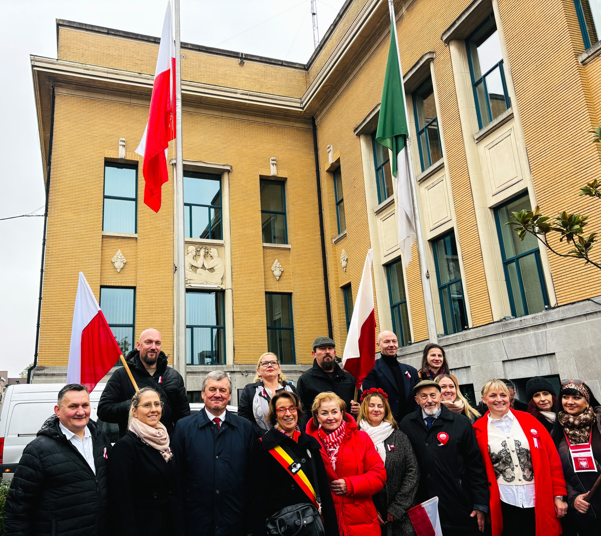

🇵🇱 Zo vierden we 11 november in Koekelberg! 🕊️✨
11 november – een dag die Polen verbindt, waar ter wereld ze ook wonen.
Met trots en grote ontroering hadden wij de eer deel te nemen aan de plechtigheden ter gelegenheid van de Nationale Onafhankelijkheidsdag van Polen, georganiseerd in de Belgische gemeente Koekelberg.
Het was een bijzonder moment waarop de wit-rode kleuren, de klanken van het Poolse volkslied en de herinnering aan de geschiedenis van ons vaderland vertegenwoordigers van verschillende gemeenschappen samenbrachten – zowel Pools als Belgisch.
Het was een bijzondere eer voor onze vereniging Pools Cultureel Centrum KROK VZW om aan deze plechtigheid deel te nemen door bloemen neer te leggen onder de Poolse vlag. Dit symbolische gebaar was een uiting van respect voor de geschiedenis van Polen, de generaties die voor haar vrijheid hebben gestreden en iedereen die de Poolse identiteit buiten de landsgrenzen koestert.
Wij danken de gemeente Koekelberg van harte voor de uitnodiging, de openheid en het creëren van ruimte om samen deze voor Polen zo belangrijke feestdag te vieren.
Onze dank gaat eveneens uit naar de Consul van de Republiek Polen, Piotr Adamiak, voor zijn aanwezigheid en het gezamenlijk herdenken van deze bijzondere dag, evenals naar de Poolse School Janusz Korczak in Brussel voor het koesteren van de Poolse geschiedenis, tradities en vaderlandsliefde bij de jongere generatie.
Wij danken alle organisatoren, deelnemers en iedereen die betrokken was bij de voorbereiding van deze plechtigheid.
Voor KROK was dit niet alleen een gelegenheid om deel te nemen aan de officiële herdenking, maar vooral een belangrijke ervaring en een bijzondere eer. Wij geloven dat het opbouwen van relaties tussen de Poolse gemeenschap en de lokale Belgische samenleving van groot belang is, en zulke momenten herinneren ons eraan dat Polen daar is waar Poolse harten kloppen.
Mogen de herinnering aan de geschiedenis, het respect voor onze nationale symbolen en het gemeenschapsgevoel elke dag bij ons blijven.
Dank u wel dat wij deel mochten uitmaken van dit bijzondere evenement.
📷 Fotogalerij (Onafhankelijkheidsdag)
Klik op een foto om te vergroten



Pools Cultureel Centrum KROK VZW
Één stap, duizenden mogelijkheden.
📌 Orygineele bericht (06/11/2026)
🇵🇱 Poolse vlag in Koekelberg – vier samen met ons de Nationale Onafhankelijkheidsdag! 🕊️✨
11 november is een bijzondere datum voor elke Pool. Op deze dag herdenken we het herstel van de Poolse onafhankelijkheid en brengen we hulde aan allen die hebben gestreden voor de vrijheid van ons vaderland.
Ter gelegenheid hiervan nodigen we de Poolse gemeenschap en alle vrienden van Polen van harte uit om deel te nemen aan de plechtigheid van het hijsen van de wit-rode vlag, georganiseerd door het gemeentebestuur van Koekelberg. We verzamelen op 11 november om 12:30 uur op het Vanhuffelplein in Koekelberg! 📍
Tijdens de plechtigheid zingen we samen het Poolse volkslied en leggen vertegenwoordigers van onze vereniging POOLS CULTUREEL CENTRUM KROK VZW bloemen neer bij de vlaggenmast als eerbetoon aan de geschiedenis, de helden en alle generaties landgenoten. Aan het evenement nemen onder anderen burgemeester van Koekelberg Olivia P'Tito, consul van de Republiek Polen Piotr Adamiuk en leerlingen van de Janusz Korczak Poolse School deel.
🍫 Na het officiële gedeelte wacht de deelnemers een zoete verrassing: een chocoladedegustatie aangeboden door Belgian Chocolate Village. Dit is een uitgelezen kans voor ontmoeting, integratie en gezellig samenzijn in een warme sfeer.
Laten we er samen bij zijn! Toon onze eenheid, trots en verbondenheid met ons vaderland, met respect voor onze wortels en nationale identiteit. 🇵🇱❤️
KROK VZW – we brengen mensen samen, koesteren Poolse tradities en creëren herinneringen die nog lang bijblijven.
Één stap, duizenden mogelijkheden!
Wil je meebouwen aan volgende projecten?
Blijf op de hoogte van onze komende initiatieven of ondersteun onze werking als vrijwilliger of donateur.